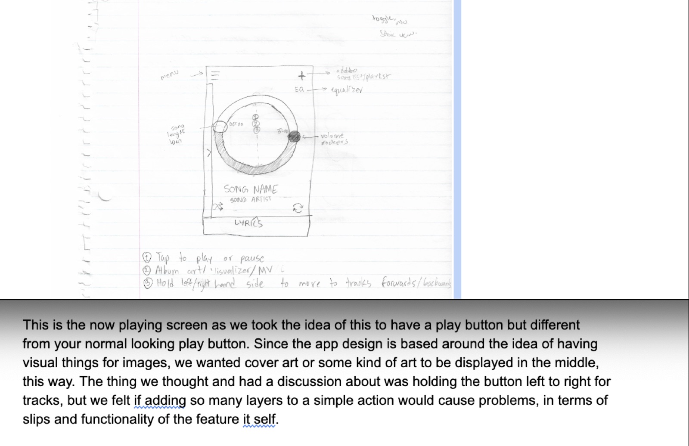
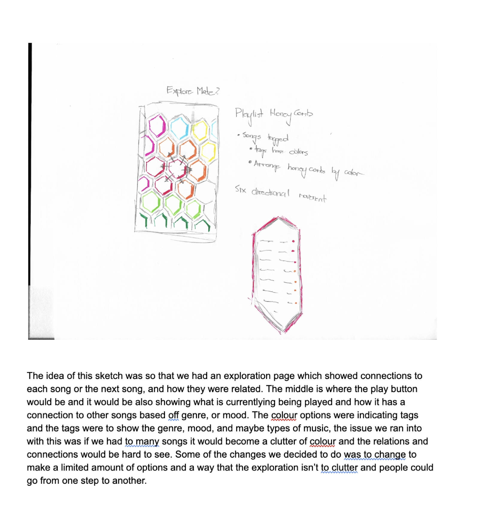
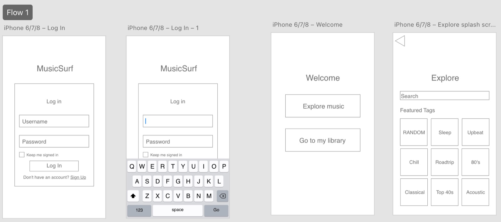
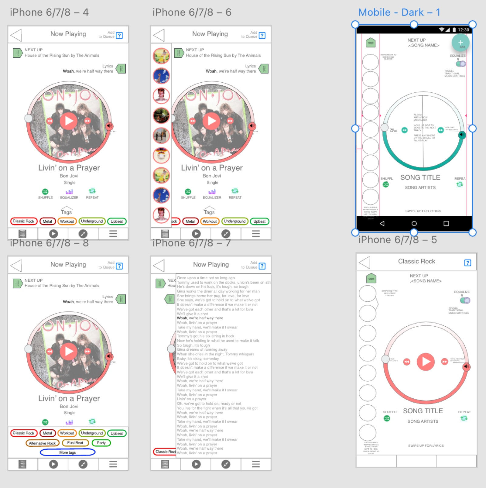
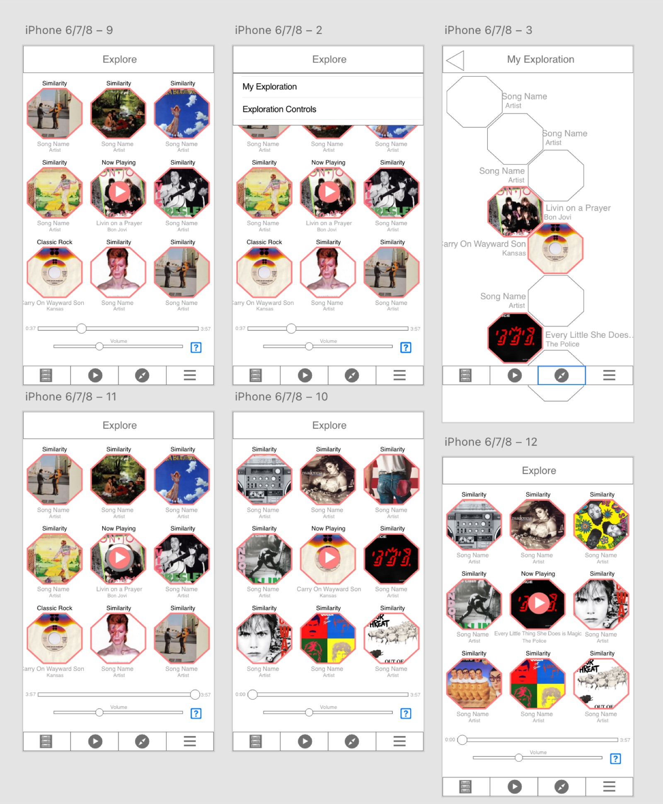
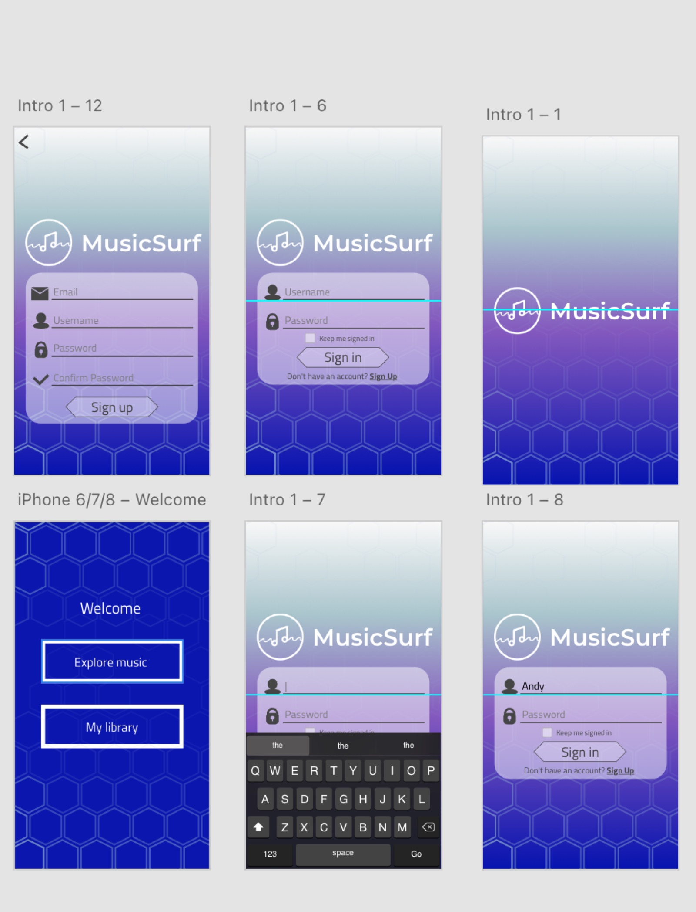
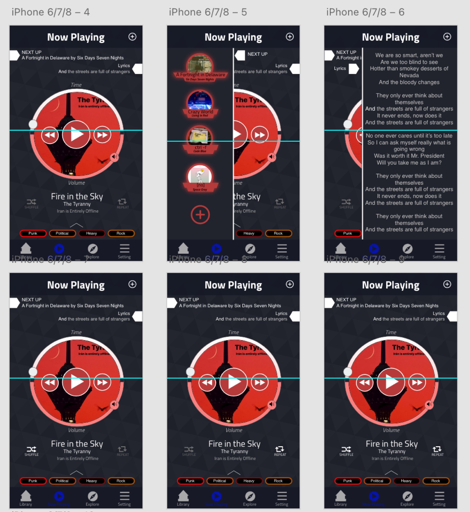
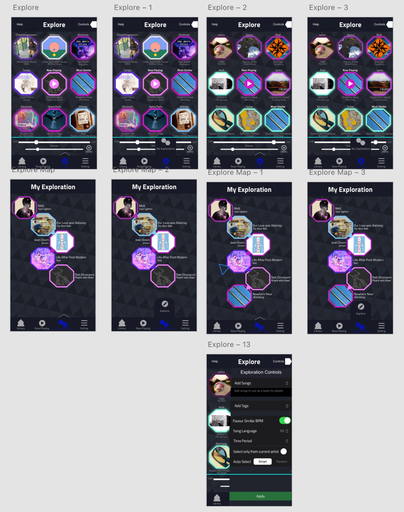

The Problem
At the time, no platform let you find music based on how you actually felt. Spotify and Apple Music surfaced songs through auto generated playlists and algorithm driven recommendations, with no transparency, no emotional context, and no real sense of exploration. You could listen, but you couldn't really browse. The discovery process was happening to you, not with you.
The Idea
MusicSurf is a concept platform built around the idea that music discovery should feel more like wandering than searching. Instead of playlists and albums, it maps songs spatially in a network graph by mood, speed, energy and genre, so you can follow a path based on how you feel rather than what an algorithm decides you should hear next.
Songs are connected to each other by shared characteristics, and you move through the graph by following whatever draws your attention. The result is something that feels personal because you're actually in control of it.
Sketches



Research & Process
This was a full end to end UX project for my Human Computer Interaction I course at the University of Calgary. I worked through the whole process from discovery to prototype, including:
- Stakeholder analysis and a competitive review of existing music platforms
- End user interviews exploring how people actually discover and relate to music
- Sketches and paper prototypes to work out the network graph interaction model
- Low fidelity wireframes for all core screens
- High fidelity prototype built in Adobe XD with full interaction flows
- Peer and instructor critique sessions with iterated revisions
Low Fidelity Wireframes




Final Design
The colour palette draws from Spotify's dark theme conventions, and we used a rich colour range within the network graph itself to communicate mood and genre. Warm colours for energetic songs, cooler tones for ambient and melancholic tracks. The idea was that you could feel the emotional shape of your library just by looking at the graph.




What I Took Away
Running the stakeholder and competitive analysis early was probably the most valuable thing we did. It sharpened the focus of the design quickly and gave the team a clear point of difference to build toward. I also got a lot out of the structured critique sessions with peers and instructors. Learning to receive specific, direct feedback and actually use it rather than defend against it is a skill, and this project is where I really started developing it.
If I rebuilt this today, I'd spend more time on user testing with real participants, and I'd think harder about accessibility, specifically how colour is used to communicate emotion for people with colour blindness. The emotional encoding system only works if everyone can read it.